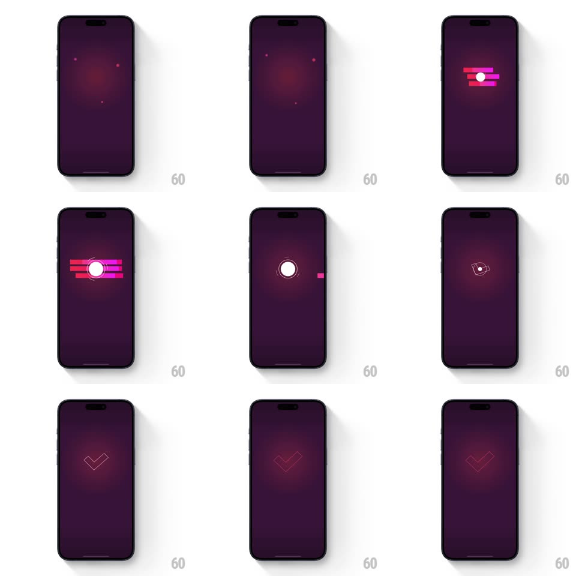

Media
Frame-by-frame

Rebuild this interaction 1:1: Elevate's matched-words tick - the WORDS MATCHED dots converge, magenta bars streak in around a white circle, the bars retract into the pulsing circle, and the circle draws out into a glowing checkmark that fades.

Rebuild this interaction 1:1: Elevate's matched-words tick - the WORDS MATCHED dots converge, magenta bars streak in around a white circle, the bars retract into the pulsing circle, and the circle draws out into a glowing checkmark that fades. ## Integration Integration: stack-agnostic spec - springs given as stiffness/damping, timed motions as duration + curve; map every value to your framework and animation library of choice. ## Scene Deep purple screen: "WORDS MATCHED" with matched words and pink dots; then a white circle ringed by three horizontal magenta/pink bars; then the bare circle; finally a large outlined checkmark glowing at center. ## Motion spec Pattern: bars-to-circle-to-tick morph. - The pink dots beside each matched word slide inward and converge at center (300ms, ease-in), merging into a single white circle that pops (scale 0.6 -> 1, spring ~420/18). - Three horizontal bars (pink, magenta, hot pink, staggered lengths) streak in from the left edge behind the circle (180ms, ease-out, 40ms apart), hover ~350ms, then retract back out left (200ms, ease-in). - The circle pulses twice (scale 1 -> 1.12 -> 1, ~350ms each) with a soft white glow. - The circle's stroke morphs into a checkmark: the ring un-draws while the tick path draws (combined trim-path morph, 400ms), leaving a glowing outlined check that holds ~600ms and fades. ## Calibration - Bars pass BEHIND the circle - the white circle stays on top throughout. - The final check is an outline, not filled - consistent with the app's line aesthetic. ## Reduced motion Dots fade to circle; circle fades to check; no bar streaks. ## Don't miss - The bars are the only horizontal motion - everything else scales or draws in place. - The glow around the check is magenta-tinted, echoing the bars.